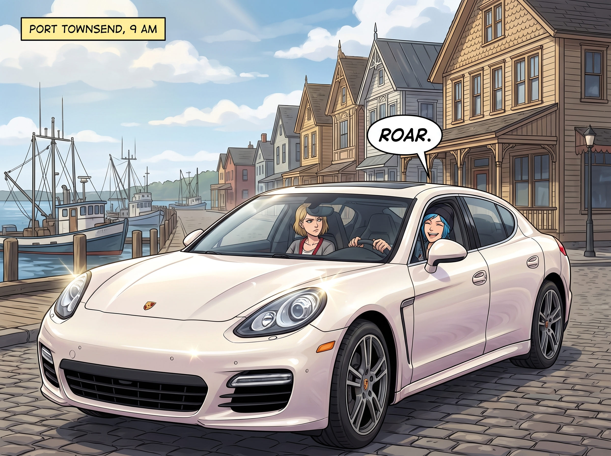
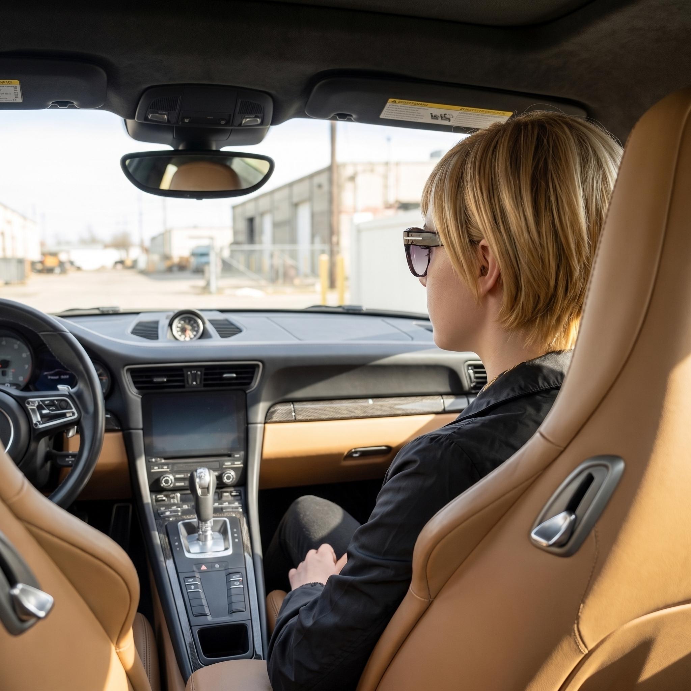
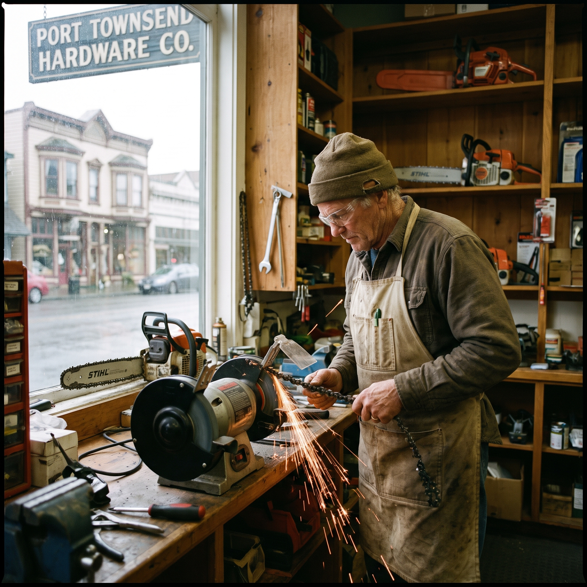
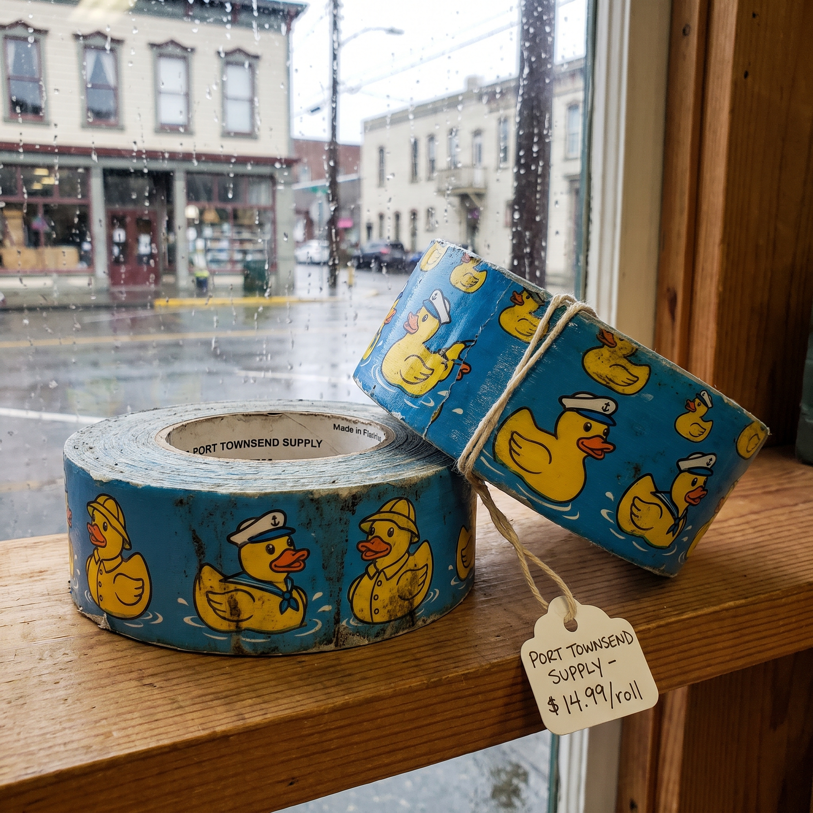
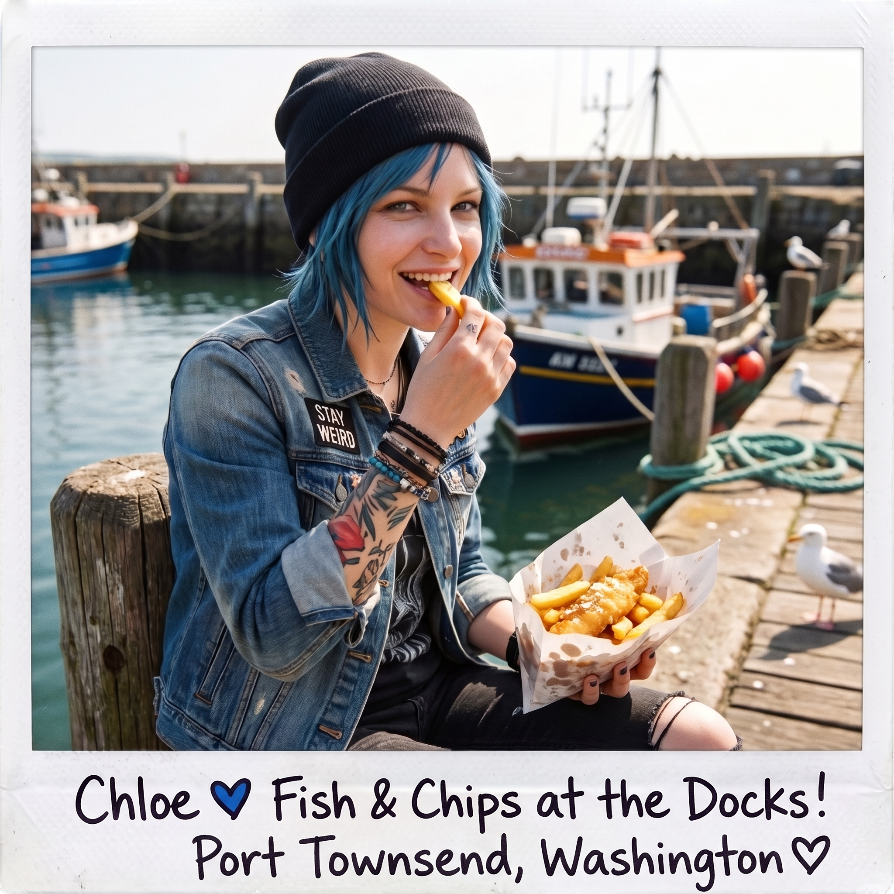

湯森港補給日





週四清晨九點，那輛珍珠白的四門保時捷轎跑，伴隨著一聲低沉的引擎聲，緩緩駛入了湯森港這座維多利亞風格的臨海港口小鎮。
駕駛座上坐著的卻不是車主本人，而是難得被允許碰方向盤的 Chloe——這是 Victoria 開出的條件：想開她的車去採購可以，但她本人必須坐在副駕駛座上全程盯著。而駕駛室內的氣氛，則在鄉村硬核採購與高定名媛審美之間爆發出極致的碰撞。
一、啟程時的車廂挑剔
名媛今天穿著一件深灰色的羊絨針織衫，外面套著一件俐落的短款防風夾克，鼻樑上依然架著標誌性的墨鏡。她坐在副駕駛座上，嫌棄地看著儀表板上的時速表：「Price，開穩一點，我這台車的懸吊系統，可不是妳那輛皮卡能比的粗糙貨色。」
「得了吧，Chase 夫人！」Chloe 嘴裡嚼著泡泡糖，「老娘開了十幾年的車，妳這台德國跑車，老娘穩得很！」
後座的 Kate 抱著購物清單軟軟地笑著，Max 則早已端起相機，對著名媛戴著墨鏡一臉緊張的側臉「咔嚓」按下了快門。
二、兵分兩路：重工業硬核 vs 維多利亞復古淘寶
保時捷在鎮中心的水泥空地停穩後，採購行動迅速兵分兩路。
Chloe 帶著 Max 直奔港口邊的五金建材中心。她在金屬型材區像個進了糖果店的孩子，一口氣訂下了六根三米長的無縫鋼管、三大箱高強度膨脹螺栓，以及兩桶重負荷機油——這些沉重的貨品，她直接請店家安排下週的預約配送直送新基地，倒是省了自己扛上扛下的麻煩。Max 則在五金店古舊的木地板上晃悠，抓拍老店員給電鋸磨齒的火花，順便在收銀台順手挑了兩卷印著復古小黃鴨圖案的防水重型膠帶。
原本以為走進小鎮會看見「滿地拖拉機與廉價罐頭」的 Victoria，剛踏進湯森港歷史街區的瞬間，整個人微微愣住了——這座建於十九世紀末的港口小鎮，保留著極其精緻的維多利亞式紅磚建築與雕花鐵藝門廊。
走進當地的有機合作社超市與獨立熟食店時，名媛的挑剔雷達居然意外收穫了驚喜：貨架上擺滿了本地農場當天清晨採摘的黑皮松露、手工壓榨的冷榨胡桃油，以及用海水古法提煉的片狀海鹽。Kate 在烘焙區欣喜地挑選著石磨全麥粉與新鮮發酵黃油，而 Victoria 則挑眉看著冷櫃裡的法式布里乾酪，嘴角微動：「……雖然物流慢得像上個世紀，但不得不承認，這群與世隔絕的鄉村嬉皮士在發酵奶酪這件事上，倒是意外地沒走偏路。」
三、碼頭小憩
中午十二點，四人在港口防波堤邊重新集結，簡單吃了頓碼頭邊買來的炸魚薯條當午餐。Victoria 一如既往地嫌棄了幾句熱量與油脂，最後還是被 Kate 三兩下說服嚐了一口，難得沒有繼續挑剔，只丟下一句「食材新鮮度勉強及格」，便繼續低頭喝著剛買的冰鎮白酒。
Chloe 坐在碼頭邊的木樁上啃著薯條，笑著調侃了兩句名媛的「農村震撼」，換來 Victoria 一句「敢把薯條的油滴到我的真皮座椅上，就把妳倒吊在碼頭起重機上餵海鷗」的威脅，一如往常地鬥嘴收場。
四、滿載而歸的午後公路
午後一點半，保時捷在海風中踏上歸途。
後車廂裡整齊放著成箱的有機蔬菜、特級乾酪以及 Kate 買回來的整打花卉苗木，那些沉重的鋼管與機油桶則已經安排好下週由五金行直接配送到新基地。經過一路的適應，Chloe 早已徹底放鬆下來，單手輕鬆搭著方向盤，隨著音響裡的鄉村搖滾哼著不成調的曲子，另一隻手時不時伸過去戳一下 Victoria 的臉頰，笑嘻嘻地逗她：「大股東，妳看，老娘開得多穩，妳剛才是不是白緊張了？」
「Price！妳的手拿開！」Victoria 沒好氣地一把拍開她的手，反手就要掐回去。
「哎哎哎，別鬧！」Chloe 立刻板起臉，一本正經地說，「妳這是在干擾行車安全，知不知道？出了事故妳這台寶貝車保費都要漲。」
Victoria 的手僵在半空，一時語塞，只能狠狠瞪了她一眼，悻悻地收回手，重新戴好墨鏡，別過臉去，耳根卻悄悄紅了一圈。
Kate 靠在後座抱著新買的園藝剪刀打著小瞌睡，Max 在平穩的車座上低頭翻看著相機裡剛拍下的碼頭光影，嘴角帶著看戲的笑意。
這輛載滿了泥土香氣、高級奶酪與無盡歡笑的保時捷，穿過華盛頓州蔥鬱的林蔭公路，朝著懸崖邊的二號車廂平穩駛去。所謂的「山卡拉」，在這一刻已經徹底成為了她們共同的生活歸宿。